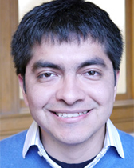

Eric Dolores

I am an activist, mathematician and machine learning consultant.
2021: I joined Yonsei University as a Postdoctoral Researcher.
I have a PhD in Mathematics from Northwestern University, and worked as an Postdoctoral Associate at Florida State University working in Machine Learning from January 2018 until June 2019. I worked at NewSci Labs for two years since July 2019. There, I develop machine learning technologies using Google Cloud Platform with Pytorch. I use my analytic skills to optimize NewSci's ML products and create new algorithms to work with images. I have experience creating custom GANs and CNN. You can learn more at my LinkedIn page.Chicago-based artist Justus Harris and I won first place at Adaption 2017 in the category “Art + Data”. Adaptation is an EU commission-funded competition and exhibit that highlights the potential of the “Internet of things”. We exhibited our work in Berlin, Germany. Adaptation, Fountains
News: I'll particiate on the AMS Special Session on Latinxs in Combinatorics Wednesday 04/06/2022 from 10:30 AM - 11:00 AM Seattle time.